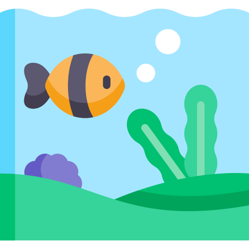

The History of the Ocean
The ocean is a continuous body of salt water that covers more than 70 percent of the Earth's surface. Ocean currents govern the world's weather and churn a kaleidoscope of life. Humans depend on these teeming waters for comfort and survival, but global warming and overfishing threaten Earth's largest habitat.The ocean is a huge body of saltwater that covers about 71 percent of Earth’s surface. The planet has one global ocean, though oceanographers and the countries of the world have traditionally divided it into four distinct regions: the Pacific, Atlantic, Indian, and Arctic oceans.
The ocean produces over half of the world's oxygen and absorbs 50 times more carbon dioxide than our atmosphere. Climate regulation: Covering 70 percent of the Earth's surface, the ocean transports heat from the equator to the poles, regulating our climate and weather patterns.Economic benefits: The U.S. ocean economy produces $282 billion in goods and services and ocean-dependent businesses employ almost three million people.Recreation: From fishing to boating to kayaking and whale watching, the ocean provides us with many unique activities.